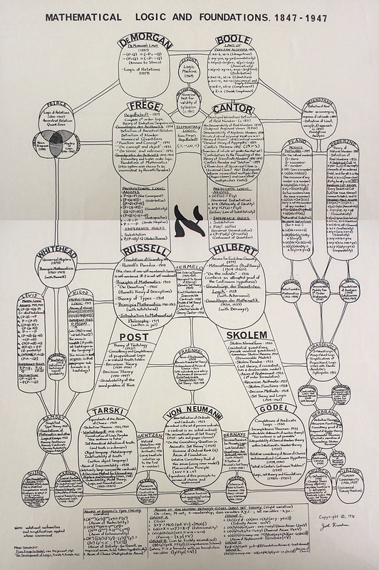

This is the homepage of the Logic, Language, Epistemology, Metaphysics, Mind, and Mathematics (LLEMMMa) Working Group in the Department of Philosophy at UC Davis. We aim to meet weekly to discuss philosophical matters related to these subjects.
For most inquiries, email Rohan, but for site-related things, email Brandon.
News from Our Members
Publication by Jerome Romagosa
Jerome Romagosa published an article arguing against Wilhelm's centered Everett interpretation of quantum probabilities: "Centered Chance in the Everett Interpretation," The British Journal for the Philosophy of Science (forthcoming), https://www.journals.uchicago.edu/doi/10.1086/732603.
Publication by Francisco N. Martinez-Avina
Francisco N. Martinez-Avina published his recent work on the logic-dependence of computability: "Changing the Logic without Changing the Subject: The Case of Computability," Journal of Logic and Computation 1–19 (2024), https://doi.org/10.1093/logcom/exae015.
Congratulations to S. Kaan Tabakci!
Kaan Tabakci successfully defended his dissertation titled "A Model-Theoretic Logical Inferentialist Account of Three-Valued Strong Kleene Logics" (Spring 2024). In the fall, he starts as Assistant Professor in the Philosophy Department at Koç University.
Congratulations to Patrick Skeels!
Patrick Skeels successfully defended his dissertation titled "The Dynamics of Disagreement and Contradiction" (Summer 2023).
Publication by Chanwoo Lee
Chanwoo Lee published his recent work on structuralism and underdetermination: Lee, Chanwoo. "The Structuralist Approach to Underdetermination." Synthese 200, no. 2 (2022): 1–25. https://link.springer.com/article/10.1007/s11229-022-03495-3.
Congratulations to I-Sen Chen!
I-Sen Chen successfully defended his dissertation titled "Converse Intentionalism and Experiential Content." Starting next September, he will be a postdoctoral researcher at the Department of Philosophy at Sichuan University, China.
Publication by Patrick Skeels
Patrick Skeels published his recent work on Norton's theory of material induction: Skeels, Patrick. "A Tale of Two Nortons." Studies in History and Philosophy of Science (2020). https://doi.org/10.1016/j.shpsa.2020.02.001.
List of Our Members
See our department's People page for faculty and graduate student profiles.
Current
Nickolas J Boylan | Jacob Coleman | Stephen Andrew Cunningham-Bryant | Zoe Drayson | Gabe Dupre | Rohan French (faculty lead) | Cody Gilmore | David Glick | Dylan Goldman | Dana Goswick | Natasha Haddal | Ethan Higginbotham | Brandon Hopkins (site maintenance) | Jared Ifland | Bobby Johnson | Cameron Dante Kincaid | Elaine Landry | Caleb Layton | Ryan Light | Hanti Lin | Hayden Macklin | Francisco N. Martinez-Avina | G.J. Mattey | Jerome Romagosa | Adam Sennet | Blane Worley
Past
G. Aldo Antonelli | Jordan Bell | Rachel Boddy | I-Sen Chen | Ibrahim Dagher | Danilo Dantas | Scotty Dixon | Da Fan | Tyrus Fisher | Joel Friedman | Chris Healow | Michael Hunter | Erik Johnson | Mandy Kamangar | Josef Kay | Chanwoo Lee | Ceth Lightfield | Kory Matteoli | Robert May | Bernard Molyneux | Jason Mosebach | Dan Norton | Liz Rard | Silvia Chavarin | Ted Shear | Patrick Skeels | S. Kaan Tabakci | Paul Teller | Khang Ton | Jacob Velasquez
Archive of Past Meetings
This list is updated quarterly; time progresses upward. For questions about ongoings, contact Rohan.
Winter 2025
- Dylan Goldman: "Expanding the Explanatory Approach: Why Metaphysics is More Fundamental than Physics"
- Blane Worley: "Hyperformalism and the Intensionality Detector
- Torsten Odland (visiting from CSU Longbeach): "Counting Many As One"
- Ethan Higginbotham: "Art Can Say Things"
- Jerome Romagosa: "In Defense of Overlap: Four-Dimensionalist Persistence in Everettian Quantum Mechanics"
Fall 2024
- Hanti Lin: "Topology without Philosophers' Tears"
- Jacob Colemann: Analysis of “Truthmakers, Entailment and Necessity” by Greg Restall
- Jared Ifland: “Metaontology in Lightt of the Frege-Hilbert Controversy”
- Francisco Martinez-Avina: “Viewpoint Realism in Mathematics”
- Blane Worley: "Decorating Classical Logic"
- Rohan French: On Graham Priest on Nothing
Spring 2024
- Caleb Layton: “In Favor of Mental Representation-based Metasemantics for Names”
- Jared Ifland: “Is a Realist Spin on Spin Realistic?”
- Francisco Martinez-Avina: “On Grothendieck and Mathematical Change: The Rise of a New Vision in Algebraic Geometry 1940-1970”
- Rohan French: Analysis of “Can the Dimples on a Golf Ball Be Evenly Spaced?” by James Robert Brown
Winter 2024
- Jared Ifland: “Realism on Thin Ice”
- Chanwoo Lee and Ryan Light: “Organism, Entropy, and Composition”
- Kaan Tabakci: “Change of Meaning, Persistence of Subject”
- Brandon Hopkins: “Conditional Obligation Logics: Motivations, Varieties, and Future Work”
- Ryan Light: “Explanation in Relativist Approaches to Composition-as-Identity”
- Dylan Goldman: “Towards a New Approach to Progress in Metaphysics”
Fall 2022
- Patrick Skeels: “Dynamic Contradiction and Tautology”
- Robert May: “Definition and Frege’s Proof of Referentiality”
- Kaan Tabakci: “Categoricity Problem for K3 and LP”
- Chanwoo Lee: “Category Theory as an Explanatory Foundation”
- Francisco Martinez-Avina: “Changing the Logic without Changing the Subject: The Case of Computability”
- Rohan French: “Can the Classical Ladder Be Kicked Away?”
Spring 2022
- Dylan Goldman: Discussion on “Thinking Outside the (Tool)Box: Towards a More Productive Engagement between Metaphysics and Philosophy of Physics” by Steven French and Kerry McKenzie
- Kor Matteoli: Discussion on “Five New Arguments for the Dynamic Theory of Time” by Ned Markosian
- S. Kaan Tabakci: Presentation on “Change of Logic, Persistence of Subject”
- David Glick: Discussion on “Configuration Space Realism and Fundamentality” by Nina Emery and Gabrielle Kerbel
Winter 2022
- Ibrahim Dagher: Discussion on “What Is the Source of Our Knowledge of Modal Truths” (2012) by E.J. Lowe
- Jerome Romagosa: Discussion on “A Subjectivist’s Guide to Objective Chance” (1980) by David Lewis
- S. Kaan Tabakci: Discussion on “Compositionality Solves Carnap’s Problem” (2016) by Dennis Bonnay and Dag Westerståhl
- Jordan Bell: Discussion on “Reference and Contingency” (1979) by Gareth Evans
- Jordan Bell: Discussion on “Semantic Structure and Logical Form” (1976) by Gareth Evans
- Ibrahim Dagher: Presentation on “There Is Not Enough Time in the World”
Fall 2021
- Chanwoo Lee: Presentation on “Reformulating the Metaphysical Underdetermination Argument for Ontic Structural Realism”
- Dylan Goldman: Presentation on “Approximation in Metaphysics: How Naturalist Metaphysics Makes Progress”
- S. Kaan Tabakci: Presentation on “Local Models”
- Brandon Hopkins: Presentation on “If-Thenism and Truthmakers for Pure Mathematics”
- Jerome Romagosa: Presentation on “Unlucky Branches in Everett’s Many Worlds”
- Caleb Layton: Presentation on “Should We Look for a Unified Theory of Reference for Names and Incompletes”
- Kory Matteoli: Presentation on “Time and the Principle of Prior Possibility”
- Patrick Skeels: Presentation on “Dynamic ‘Might’ and Correct Belief”
- Jordan Bell: Presentation on “Singularity and Object Dependence”
- Rohan French: Discussion on “Surprise Surprise: KK Is Innocent” (2020) by Julien Murzi, Leonie Eichhorn, and Philipp Mayr
Spring 2021
- Ryan Light: Presentation on “Hyperplurals”
- S. Kaan Tabakci: Presentation on “Strong Kleene Logics for Inferentialists”
- Natasha Haddal: Discussion on “Language Loss and Illocutionary Silencing” (2020) by Ethan Nowak
- Patrick Skeels: Discussion on “Defaults in Update Semantics” (1996) by Frank Veltman
- Chanwoo Lee: Presentation on “Metaphysical Perspecuity”
Winter 2021
- Charles Albright: Presentation on “A Definition of Slur”
- I-Sen Chen: Discussion on “Theorizing about the Epistemic” (2016) by Stewart Cohen
- S. Kaan Tabakci: Discussion on “Why Conclusions Should Remain Single” (2011) by Florian Steinberger
- Brandon Hopkins: Discussion on “Facts and Tautological Entailment” (1969) by Bas C. van Fraassen
- I-Sen Chen: Discussion on “Ambitious, Yet Modest, Metaphysics” by Thomas Hofweber
- Patrick Skeels: Presentation on “Prospects for Cloudy Contextualism”
Fall 2020
- Jordan Bell: Presentation on “Identifying Particulars and Anchoring”
- Stephen Cunningham-Bryant: Presentation on “On Sincere Misleading Assertions”
- I-Sen Chen: Research Workshop
- Chanwoo Lee: Presentation on “Top-Down Metasemantics for Logic”
- Natasha Haddal: Research Workshop
- Da Fan: Presentation on “From Contrastivism (Back to) Contextualism”
- Chanwoo Lee: Discussion on “The Computational Philosophy: Simulation as a Core Philosophical Method” by Conor Mayo-Wilson and Kevin Zollman
- Patrick Skeels: Presentation on “Dynamics of Disagreement and Contradiction”
Summer 2020
- Ryan Light: Discussion on “Donald Baxter’s Composition as Identity” (2012) by Jason Turner
- Chanwoo Lee: Presentation on “Against the Magnetic Solution to the Substantivity Problem in Metaontology”
- Patrick Skeels: Discussion on “On Disagreement” (2017) by Torfinn Thomesen Huvenes
- Patrick Skeels: Discussion on “The Disagreement Challenge to Contextualism” (2017) by Justin Khoo
- Patrick Skeels: Discussion on “Relativism and Disagreement” (2006) by John MacFarlane
- Ryan Light: Discussion on “Is Mereology Ontologically Innocent?” (1999) by Byeong-Uk Yi
- S. Kaan Tabakci: Discussion on “Assertion, Denial, and the Liar Paradox” (1984) by Terence Parsons
Spring 2020 (Theme: Classics in Philosophy of Language, Logic, Mathematics)
- Da Fan: Discussion on “Scorekeeping in a Language Game” (1979) by David Lewis
- Ryan Light: Discussion on “Three Grades of Modal Involvement” (1953) by W.V.O. Quine
- S. Kaan Tabakci: Presentation on “Subminimal Negation on the Australian Plan”
- Jordan Bell: Discussion on “On Referring” (1950) by P.F. Strawson
- Jordan Bell and Patrick Skeels: Discussion on “On Quantifier Domain Restriction” (2000) by Jason Stanley and Zoltán Gendler Szabó
- Chanwoo Lee: Discussion on “Truth by Convention” (1935) by W.V.O. Quine
- Natasha Haddal: Discussion on “Meaning,” Pursuit of Truth (1990) by W.V.O. Quine
- Patrick Skeels: Discussion on “Utterer’s Meaning and Intentions” by H.P. Grice
- Patrick Skeels: Discussion on “Logic and Conversation” (1975) by H.P. Grice
- Da Fan: Discussion on “Sense and Reference” by Gottlob Frege
Winter 2020 (Theme: Berto and Jago’s Impossible Worlds (2019))
- Patrick Skeels: Discussion on Chapters 4–5 of A Philosophical Guide to Conditionals (2003) by Jonathan Bennett
- Ryan Light: Discussion on “On Saying That” (1968) by Donald Davidson
- S. Kaan Tabakci: Discussion on Chapter 8 of Part III of Impossible Worlds (2019) by Francesco Berto and Mark Jago
- Da Fan and S. Kaan Tabakci: Discussion on Part II of Impossible Worlds (2019) by Francesco Berto and Mark Jago
- Paul Teller: Presentation on “Williamson’s Epistemicism and the Properties Account of Predicates”
- Reid Dale: Presentation on “Bayesian Jurors and Our Jurisprudential Norms”
- Adam Sennet: Discussion on “Meaning, Modulation, and Context: A Multidimensional Semantics for Truth-Conditional Pragmatics” (2018) by Guillermo Del Pinal
- Da Fan and S. Kaan Tabakci: Discussion on Part I of Impossible Worlds (2019) by Francesco Berto and Mark Jago

Mathematical Logic and Its Foundations
Created by Joel I. Friedman (Prof. Emeritus)